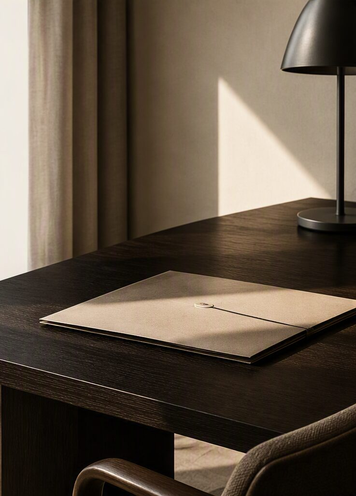

Adwokat — Kraków
Spokój, precyzja i odpowiedzialność w sprawach, które mają znaczenie.
Butikowa kancelaria w Krakowie. Sprawy karne, cywilne i rodzinne prowadzone w oparciu o analizę, dyskrecję i bezpośredni kontakt z adwokatem.

Obszary praktyki
Przejrzysta lista usług.
Obrona i reprezentacja na każdym etapie postępowania karnego.
Spory majątkowe, zobowiązania, odszkodowania i dochodzenie należności.
Rozwody, kontakty z dziećmi, alimenty i władza rodzicielska.
Opiniowanie umów i reprezentacja w sporach gospodarczych.
Analiza i dochodzenie roszczeń od podmiotów prywatnych i instytucji.
O kancelarii
Analiza stanu faktycznego i ocena ryzyka.
Każda sprawa wymaga dokładnej analizy dokumentów i praktycznej oceny dostępnych środków prawnych.
Kancelaria zapewnia bezpośredni kontakt z adwokatem, przejrzysta komunikację i reprezentację na każdym etapie postępowania.
- Bezpośredni kontakt z prowadzącym sprawę
- Przejrzysta informacja o sytuacji prawnej
- Odpowiedzialne prowadzenie postępowań
Standard pracy
Wartości kancelarii.
RZETELNOŚĆAnaliza oparta na faktach i obowiązujących przepisach.
DYSKRECJAPoufność powierzonych informacji.
ZAANGAŻOWANIEBezpośredni kontakt z adwokatem prowadzącym sprawę.
Kontakt
Porozmawiajmy o Twojej sprawie.
Pierwszy kontakt pozwala określić charakter sprawy oraz możliwe kierunki dalszego działania.
ul. Dobrego Pasterza 189
31-416 Kraków
ADWOKAT KAMIL NIEDZIEJKO
ul. Dobrego Pasterza 189
31-416 Kraków